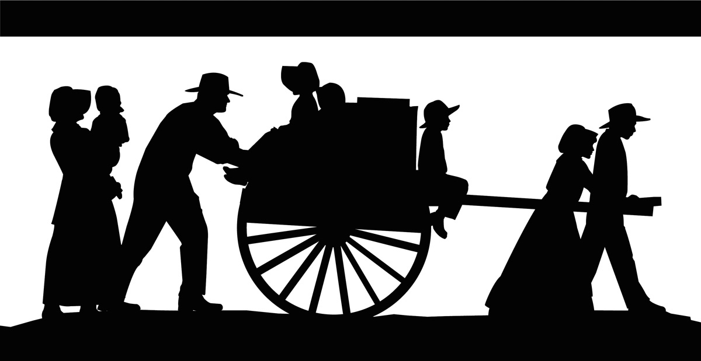

|
|
Frequently Asked QuestionsWhen is the 2019 Lincoln Stake Trek?The Trek will be from June 17th to June 19th (Monday through Wednesday). We will meet at the Lincoln Stake Center at ??? am.Which forms and releases do I need to fill out or return in order to go?You should make sure you are registered. If you are under 18 years of age and you will not be assigned to a family with your parent or guardian, you must fill out the medical release form.What is the age group for the Trek?The Trek is for all individuals who wish to participate from the Lincoln Stake. Youth younger than 11 must have a parent or guardian travel with them. Accomodations will be made for those that are not able to walk long distances or do not wish to participate in hiking trek.Who are the leaders of each family or group?Each family organized will decide on one or two leaders of that family. The stake will assign families to handcart companies lead by a trail boss. The Trail boss will communicate to the family leaders.What is a "Trek Family"?A Pioneer family is considered an individual, a group of friends, a family, or a group of more than one families wishing to travel together. This can include YM groups, YW groups, or Youth groups. Each Pioneer Family has one or two individuals that are considered the leaders of that family and must be over the age of 21 (i.e. Married Couple for coed youth groups, 2 male adults for YM groups, 2 female adults for YW groups). Youth younger than 11 need to have a parent or guardian participate with them.How can I learn more about the Pioneers and my own pioneer history?If you have an ancestor that was part of one of the hand cart companies or wagon trains (Martin, Willie, Hunt, Hodgetts or Rescue Company) you may research that ancestor on Trek and be prepared to share their story with your trek family. There are many resources to learn about the pioneers by viewing the resources in Media & ResourcesFor those that do not have an ancestor that was part of these particular pioneer groups listed above (which will be many), you may also research how your own family was converted to the Gospel. How do I get started finding pioneer clothing?Pioneer Clothing is not required although it is encouraged. To familiarize you with what pioneer's wore in the 1850's refer to the Youth Packet or to the individual Clothing lists for Young Men or Young Women. Both documents can be found at Registration & PreparationCan we invite non-member friends on the trek?Absolutely. We love when friends join us for all activities, please register them with your pioneer family and ensure they accept to live by the church standards while on trek.I have other questions, where can I get answers?We are willing to help. Each Ward has a Stake Trek Representative who is listed below. You can also contact Brother Andy Trane on the High Council for more information.Bridgewater Ward: Michael and Elise Shurtliff East View Ward: Aaron and Lorraine Schaerrer Lincoln 1st Ward: David and Annette Rudie Lincoln 2nd Ward: Nik Jay and Ariel Westfall Lincoln 3rd Ward: Randy Richmond Sand Creek 2nd Ward: Richard and Terri Hess Sand Creek 3rd Ward: Jennifer Caywood Mesa Branch: Bryce Contor |
|
Copyright © 2019 Lincoln Stake Trek. All Rights Reserved.
This website is NOT an official site of The Church of Jesus Christ of Latter-day Saints

and is intended strictly for the use of Lincoln Stake Trek Participants. |